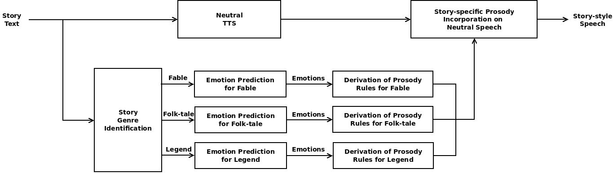

Harikrishna D M
MS Student
Department of Computer Science and Engineering
Indian
Institute Of Technology Kharagpur, West Bengal, INDIA
Phone: +91-9743414545
Email: harikrishna.dm@sit.iitkgp.ernet.in
MULTI-STAGE CHILDREN STORY SPEECH SYNTHESIS
- Introduction: The basic objective of this work is to synthesize story-style speech from a story text using the neutral text-to-speech systems. This work aims at developing a multi-stage children story speech synthesizer which synthesizes high-quality story-style speech from story text. In this work, the overall framework of multi-stage children story speech synthesis is divided into three stages: (i) story genre classification from story text, (ii) emotion prediction from story text, and (iii) synthesis of story-style speech from story text. This work makes significant contributions to the study of story classification, emotion prediction and expressive speech synthesis.
- Block diagram of the proposed framework for story-style speech synthesis

Firstly, the story genre and emotions from the given story text are identified, then story-specific prosody modification factors are manually derived by listening to a small set of stories, and finally story-style speech is synthesized by incorporating the derived story-specific prosody modification factors using a markup language. The story text is classified into one of the predefined story genres: fable, folk-tale and legend. The individual sentences of the stories are classified into one of the predefined emotion classes: happy, sad, anger, fear and neutral. The story-specific prosody modification factors are derived by analyzing the prosody parameters of story-specific emotions. The prosody parameters includes pitch base, pitch range, intensity and speaking rate. SABLE markup is used for synthesizing the story-style speech from story text using Festival TTS system. The story-style speech is synthesized by annotating the input story text with SABLE prosody tags. The SABLE prosody tags guide the Festival TTS system to select the optimal units based on the prosody modification factors provided in the prosody tags. The selected optimal units are concatenated to produce the story-style speech.
- Different stages in our proposed framework for multi-stage children story speech synthesis
- Children story classification: Hindi and Telugu children stories consisting of 300 and 150 short stories are classified into three genres: fable, folk-tale and legend using keyword and part-of-speech (POS) features. Various feature reduction techniques are explored to enhance the performance of story classification. Unlike traditional document classification methods which use the whole document for classification, we have explored story classification by diving stories into partial parts such as (i) introduction, main, climax and (ii) initial, middle, end. Further, we tried to find an optimal number of sentences required to identify the story genre using sentence incremental model. Three promising machine learning classifiers for text classification: naive Bayes, k-nearest neighbour and support vector machine are used. Statistical significance test is performed to evaluate the cross-classifier performance and the performance of the classifiers is evaluated using precision, recall and F-measure.
- Emotion prediction from story text: The next stage in our proposed multi-stage children story speech synthesis framework is prediction of sentence level emotions from the story text. Due to unavailability of the labelled emotional sentences in Telugu, we are restricting the emotion prediction task for Hindi. A two-stage approach for predicting emotions from story text has been proposed. In the first stage, sentence level emotions are predicted using POS and proposed emotion-specific features. In the second stage, the predicted emotions are updated using the knowledge of the sequence of emotions present in the story text. The importance of the distribution of emotions in children stories and the statistical evidence for the need for emotional sequencing are discussed.
- Synthesis of story-style speech: A small set of story corpus is perceptually analyzed to derive story-specific prosody modification factors. To derive the story-specific prosody modification factors, a subset of story corpus comprising of 45 stories, recorded by a professional female artist are considered. These 45 stories are also synthesized using Hindi neutral TTS system. The story-specific prosody modification factors are derived carefully by analyzing the perceptual differences between synthesized neutral speech utterances and their respective utterances narrated by a storyteller. To synthesize story-style speech using SABLE markup language, emotional salient sentences from the story text has been identified and annotated with corresponding story-specific emotion tags. Finally, the annotated story text in the form of SABLE markup template is given as input to the Festival TTS system. The SABLE markup guides the Festival TTS system to select the optimal units based on the prosody factors provided in the SABLE markup tags. The selected optimal units are concatenated to generate the story-style speech.
- Evaluation of synthesized story-style speech: The quality of the story-style speech synthesized using our proposed method (i.e., incorporating story-specific emotions) is evaluated by comparing it with the baseline method (i.e., story-style speech synthesized by incorporating the basic emotions). The synthesized story-style speech is evaluated by comparing its naturalness, intelligibility and story style. In baseline method, the prosodic aspects of the sentence are analyzed at three levels: initial, middle and final words of the sentence. The objective and subjective evaluations are carried out to assess the quality of the synthesized speech. Mel cepstral distortion (MCD) is used as an objective measure to compare the story-style speech synthesized using two methods. Apart from this, listening tests are conducted to assess the quality of synthesized speech. Mean opinion scores (MOS) and preference tests are used for subjective evaluation of the synthesized story-style speech. A few Hindi speech samples synthesized using the proposed and baseline methods are provided in the below table. In the table, Baseline and Proposed corresponds to speech files synthesized using baseline and our proposed methods.
- Publications
- Harikrishna D M and K. Sreenivasa Rao, "Emotion-specific features for classifying emotions in story text", in Twenty Second National Conference on Communications (NCC), (Guwahati, India), March 2016. PDF
- Harikrishna D M and K. Sreenivasa Rao, "Classification of children stories in Hindi using keywords and POS density", in IEEE International Conference on Computer Communication and Control (IC4), (Indore, India), September 2015. PDF
- Harikrishna D M and K. Sreenivasa Rao, "Children story classification based on structure of the story", in Fourth International Conference on Advances in Computing, Communications and Informatics (ICACCI), (Kochi, India), August 2015. PDF
- Harikrishna D M, Gurunath Reddy M and K. Sreenivasa Rao, "Multi-stage children story speech synthesis for Hindi", in Eighth International Conference on Contemporary Computing (IC3), (Noida, India), August 2015. PDF
- Gurunath Reddy M, Harikrishna D M, K. Sreenivasa Rao, and Manjunath K E, "Telugu emotional story speech synthesis using SABLE markup language", in IEEE International Conference on Signal Processing and Communication Engineering Systems (SPACES), (Vijayawada, India), January 2015. PDF
- Parakrant Sarkar, Arijul Haque, Arup Kumar Dutta, Gurunath Reddy M, Harikrishna D M, Prasenjit Dhara, Rashmi Verma, Narendra N P, Sunil Kumar S B, Jainath Yadav and K. Sreenivasa Rao, "Designing prosody rule-set for converting neutral TTS speech to storytelling style speech for Indian languages: Bengali, Hindi and Telugu", in Seventh International Conference on Contemporary Computing (IC3), (Noida, India), August 2014. PDF